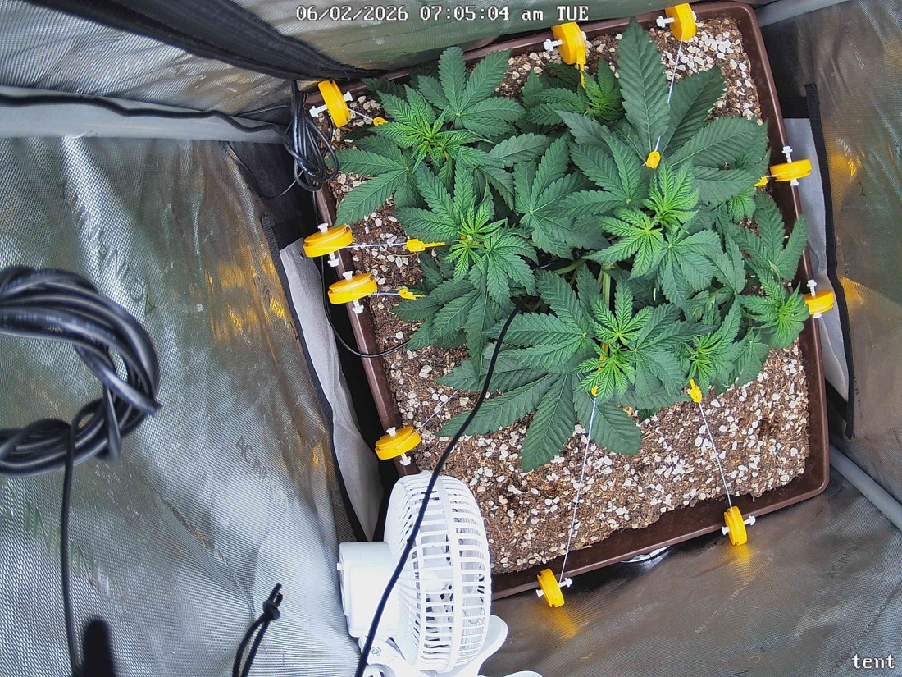

← All reports
Jun 2, 2026
Tue Jun 2, 2026 — 7:05 AM

Prognosis
Daily Prognosis — Day 35 from germ, Day 28 in tent
- What changed: Canopy has filled in noticeably overnight — more leaf area covering the soil, lateral branches extending further toward the LST anchor points. Tips of pulled-down branches are turning back upward (positive phototropic response to training).
- Color/posture: Uniform deep green across the canopy, leaves are flat and turgid, no praying-too-hard or wilting. Petioles are angled up — healthy.
- Structure: LST is doing its job — you can see the even, flat canopy spread vs. yesterday's slightly more domed shape. Multiple bud sites now exposed to direct light instead of being shaded under the original apex.
- Stress signs: None visible — no tacoing, no clawing, no tip burn, no interveinal yellowing, no spotting, no pests or webbing. Soil surface looks appropriately dry on top (last water 5/28 = ~5 days ago, due soon).
- Phase check: ~5 weeks from germ, ~12 days post-top, actively in vigorous vegetative recovery + LST response. Right on track for a 2x2 — possibly slightly ahead given the strong lateral fill from training.
- Watering: Surface is dry; lift the pot — if light, water today. Otherwise tomorrow.
- Light: Still at 500 PPFD with zero stress signs at this canopy distance. You have headroom to push to 550–600 in the next day or two if you want to keep pace, especially as the canopy widens and intercepts more light.
- LST: Tips curling upward means it's time to re-tension/re-tie the outer branches within the next 1–2 days to keep the canopy flat as they grow vertical again.
Suggested next actions: Check soil weight today for watering; re-tension LST ties in 1–2 days; consider PPFD bump to 550 mid-week. Otherwise no action needed.
Overall: Textbook recovery and training response — healthy, vigorous, and on schedule.